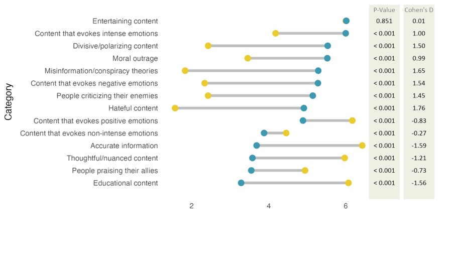
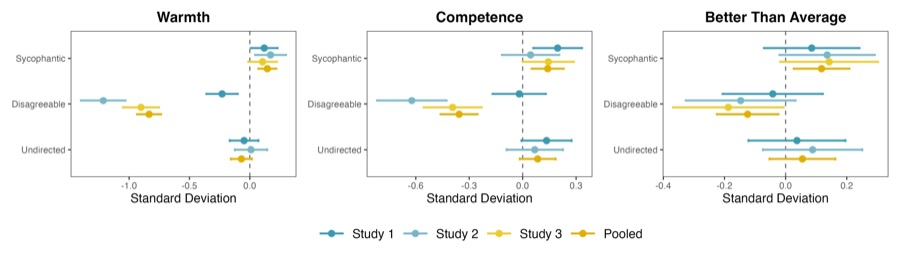
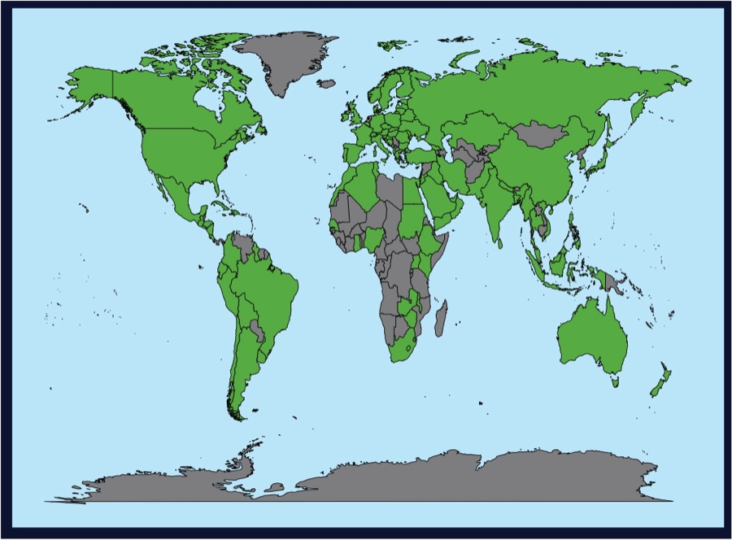
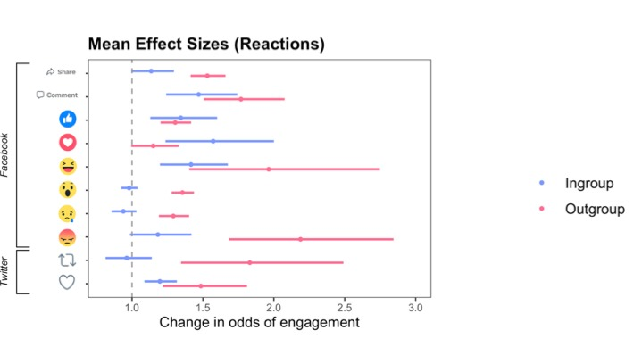
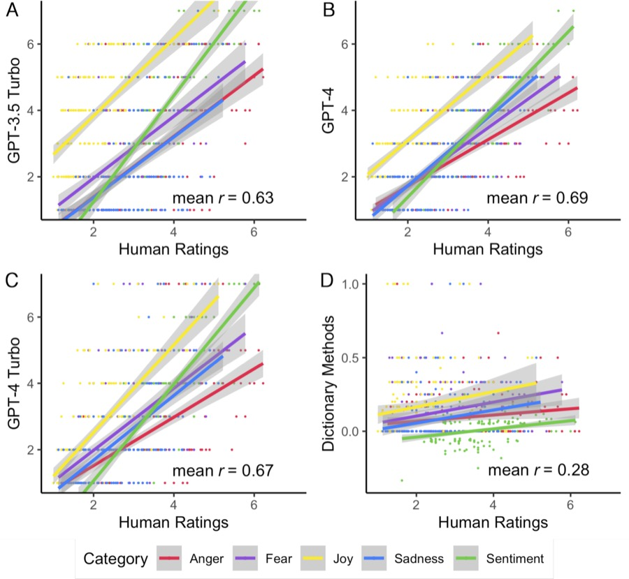
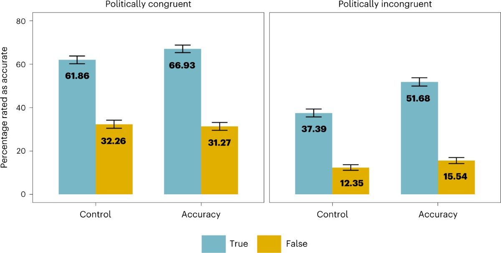

We study how emerging technologies, such as social media and AI, impact us.
Principal Investigator: Steve Rathje, Assistant Professor, Human-Computer Interaction Institute, School of Computer Science, Carnegie Mellon University

Why do some ideas spread widely, while others fail to catch on? We review the psychology of information spread, or the psychology of “virality.” Similar types of information tend to spread in many contexts, both online and offline. This is likely because similar psychological processes drive information spread across contexts. We explain how these psychological processes interact with structural features of information environments, including norms, networks, and incentive structures. Surprisingly, widely shared content is often not widely liked—a phenomenon called “the paradox of virality.” We discuss the strengths and limitations of the virality metaphor, and future directions for the field, such as leveraging recent advances in artificial intelligence to better understand how information spreads across cultures and contexts.

There is widespread concern that AI chatbots are “sycophantic,” or overly agreeable and validating. However, less is known about the causal impact of interacting with sycophantic AI on beliefs and behaviors. Across seven studies (total n = 7,227), we found that people enjoyed interacting with sycophantic AI chatbots more than interacting with neutral chatbots or “disagreeable” chatbots that challenged them. Brief conversations with sycophantic chatbots about political or personal topics increased the strength of people’s attitudes. Sycophantic chatbots also inflated people’s perceptions that they were better than the average person on desirable traits, and led people to bet more money that they scored better than average on tasks purporting to measure desirable traits. Participants consistently rated sycophantic chatbots as more “unbiased” than disagreeable chatbots, suggesting that people may be blind to biases in AI output that aligns with their views.

More than half of the world’s population uses social media. There is widespread debate among the public, politicians, and academics about social media’s impact on important outcomes, such as intergroup conflict and well-being. However, most prior research on the impact of social media relies on samples from the United States and Western Europe, despite emerging evidence suggesting that the impact of social media is likely to differ across the globe. Building on the results of pilot experiments from three countries (n = 894), we plan to conduct a global field experiment to measure the causal impact of reducing social media usage for two weeks across 23 countries (projected n > 8,000). We will then test how social media reduction influences four main outcomes: news knowledge, exposure to online hostility, intergroup attitudes, and well-being. We will also explore how the effects of social media reduction vary across world regions, focusing on three theoretically-informed country-level moderators: income level, inequality, and democratic strength. This large-scale, high-powered field experiment, and the global dataset resulting from it, will offer rare causal evidence to inform ongoing debates about the impact of social media and how it varies around the world.

There has been growing concern about the role social media plays in political polarization. We investigated whether out-group animosity was particularly successful at generating engagement on two of the largest social media platforms: Facebook and Twitter. Analyzing posts from news media accounts and US congressional members (n = 2,730,215), we found that posts about the political out-group were shared or retweeted about twice as often as posts about the in-group. Each individual term referring to the political out-group increased the odds of a social media post being shared by 67%. Out-group language consistently emerged as the strongest predictor of shares and retweets: the average effect size of out-group language was about 4.8 times as strong as that of negative affect language and about 6.7 times as strong as that of moral-emotional language—both established predictors of social media engagement. Language about the out-group was a very strong predictor of “angry” reactions (the most popular reactions across all datasets), and language about the in-group was a strong predictor of “love” reactions, reflecting in-group favoritism and out-group derogation. This out-group effect was not moderated by political orientation or social media platform, but stronger effects were found among political leaders than among news media accounts. In sum, out-group language is the strongest predictor of social media engagement across all relevant predictors measured, suggesting that social media may be creating perverse incentives for content expressing out-group animosity.

The social and behavioral sciences have been increasingly using automated text analysis to measure psychological constructs in text. We explore whether GPT, the large-language model (LLM) underlying the AI chatbot ChatGPT, can be used as a tool for automated psychological text analysis in several languages. Across 15 datasets (n = 47,925 manually annotated tweets and news headlines), we tested whether different versions of GPT (3.5 Turbo, 4, and 4 Turbo) can accurately detect psychological constructs (sentiment, discrete emotions, offensiveness, and moral foundations) across 12 languages. We found that GPT (r = 0.59 to 0.77) performed much better than English-language dictionary analysis (r = 0.20 to 0.30) at detecting psychological constructs as judged by manual annotators. GPT performed nearly as well as, and sometimes better than, several top-performing fine-tuned machine learning models. Moreover, GPT's performance improved across successive versions of the model, particularly for lesser-spoken languages, and became less expensive. Overall, GPT may be superior to many existing methods of automated text analysis, since it achieves relatively high accuracy across many languages, requires no training data, and is easy to use with simple prompts (e.g., “is this text negative?”) and little coding experience. We provide sample code and a video tutorial for analyzing text with the GPT application programming interface. We argue that GPT and other LLMs help democratize automated text analysis by making advanced natural language processing capabilities more accessible, and may help facilitate more cross-linguistic research with understudied languages.

The extent to which belief in (mis)information reflects lack of knowledge versus a lack of motivation to be accurate is unclear. Here, across four experiments (n = 3,364), we motivated US participants to be accurate by providing financial incentives for correct responses about the veracity of true and false political news headlines. Financial incentives improved accuracy and reduced partisan bias in judgements of headlines by about 30%, primarily by increasing the perceived accuracy of true news from the opposing party (d = 0.47). Incentivizing people to identify news that would be liked by their political allies, however, decreased accuracy. Replicating prior work, conservatives were less accurate at discerning true from false headlines than liberals, yet incentives closed the gap in accuracy between conservatives and liberals by 52%. A non-financial accuracy motivation intervention was also effective, suggesting that motivation-based interventions are scalable. Altogether, these results suggest that a substantial portion of people's judgements of the accuracy of news reflects motivational factors.